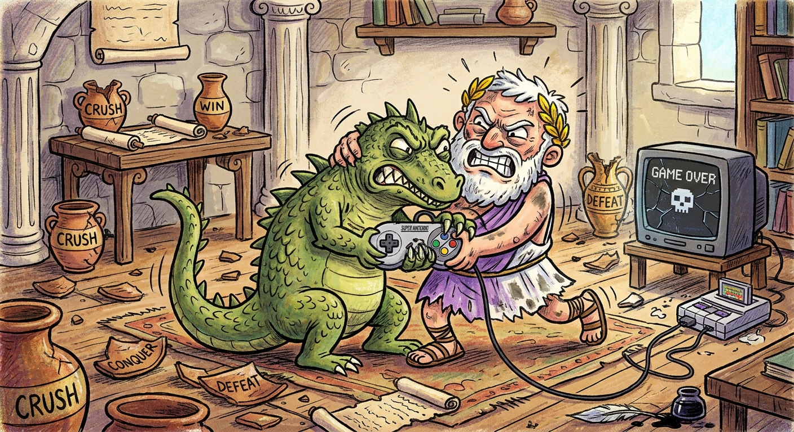
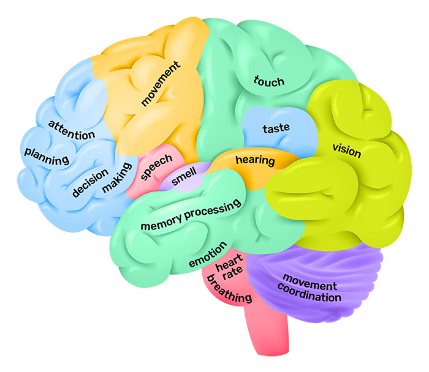
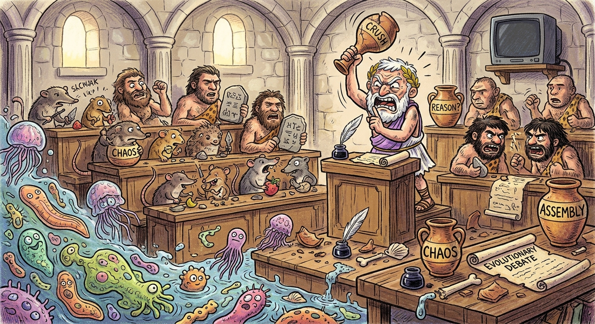

The tale of the philosopher and the lizard.
The specter of AI misalignment looms ominously over October 2026 discussions about technology. The past few months have seen several popular websites and even governments get hacked. We’ve seen GPT Astra rip through hundreds of major open problems in theoretical computer science and math (much to the dissatisfaction of their respective research communities). As someone with dozens of half-finished blog post drafts on the subject that I never posted because I didn’t want this blog to get too philosophical, I have decided that today is the day that I finally bite the bullet, clean them up, and start to publish them.
I will start, naturally, with some dieting advice.
If you live in the developed world, you likely have had the experience of deeply wanting to eat a second donut and stopping because you didn’t want to become an obese diabetic with multiple plastic tubes propping open your coronary arteries. That experience, of two conflicting objectives wrestling for control over your hand, is one of the most fundamental human experiences it is possible to have — more fundamental, I will argue, than even a parent’s love for their child or the deep satisfaction of popping bubble wrap.
To be human is to be in a constant state of tension between the strategic prefrontal cortex and the tactical hindbrain. Dogs feel maternal attachment, snakes enjoy a good buffet dinner, but only humans have access to the mental angst associated with trying very very hard to stop watching TikTok (although crows do exhibit some ability to recognize long-term beneficial actions which result in worse shor-term gains). Our humanity is intrinsically tied to this state of conflict between brain regions. And where there is conflict, there is misalignment. In this case, the misalignment is between what our prefrontal cortex wants, and what our immediate reward system does.
I would go further and say that this misalignment is a microcosm of the broader alignment problem. Aligning other agents with our preferences requires that we first understand what our own preferences are in the first place. After all, if we can’t stop ourselves from eating too many potato chips, how can we ever hope to stop the swarms of alien intelligences we’re creating from hacking our infrastructure?
This is the question I will try to answer in the next few hundred words. My answer will have three parts. First, I will outline a more detailed model of how sub-agent conflicts are instantiated and resolved in the brain; second, I will illustrate a distinction between revealed preferences and what I like to call reflective preferences; finally, I will argue that the gap between these preferences is a result of our lizard-selves gaining the upper hand in moments of stress, and outline tried-and-tested methods for closing this gap.
TL;DR:

The philosopher-king and the lizard often disagree about the best course of action, leading to internal conflict.
We like to think of ourselves as just that: a self. But arguably a more useful model is to think of ourselves in the plural. There is good neuroscientific evidence supporting a model of at least two fairly independent processing centers in the brain, although there is still much debate as to whether this independent processing implies that we also have two independent loci of consciousness (see this interview for an accessible introduction to the problem). Most of the aforementioned evidence comes from patients whose corpus callosum was severed in a now-outdated treatment for epilepsy, or else had some form of brain damage, usually a stroke, to parts of the brain with many callosal connections. The former are also known as ‘split-brain’ patients (see this video to get a sense of the craziness of what it must be like to have your brain split in half).
It’s hard to consider the self to be a unified entity after reading too many case studies of split-brain patients. The most entertaining such examples come from reports on patients with alien hand syndrome. When you disconnect one hemisphere from the other, or in particular one part of the brain (for example, that controls the movement of a hand) from the inhibitory effects of the rest of the brain, the result can be a limb that appears to its owner to have a “mind of its own”. This book chapter outlines a few interesting case studies, including an instance where a woman’s left hand would knock away or stub out a cigarette that her right was trying to light, as well as a man whose had to physically restrain his right hand with his left to keep it from removing his clothes and tearing up money, resorting to covering the hand with a bright blue sock to keep it subdued. In these cases there is certainly some part of the brain which is controlling the hand and which appears to have its own preferences, if not long-term goals, but it is completely inaccessible to the part of the brain which can speak.
The Master and His Emissary contains several interesting examples of what happens when you ask a split-brain patient to draw a picture with either their right or left hand (I couldn’t find copies of these online unfortunately). Even accounting for the fact that people are generally not great at drawing with their non-dominant hand, the difference between the two hands can be stark. Subjects asked to draw a flower with their right hand would typically produce a vaguely circular shape, with no stem or leaves. If they tried to draw the same picture with their left hand, they would draw a full flower.
One common misconception about the brain is that neurons spend most of their time computing. This is false. Many neurons (roughly 10-30% depending on brain region) in fact spend most of their time doing nothing but bashing other neurons with special neurotransmitters until they stop firing. These inhibitory neurons are especially critical in the PFC, which spends much of its energy telling the inner lizard to shut up. For example, the PFC might try to shut down a runaway amygdala response once you realize that no, in fact that tiger that is charging towards you is separated by a very thick and strong fence and your demise is not imminent. When you are sleep-deprived, these inhibitory capabilities diminish and you spend more time watching TV and eating junk food. Compared to the inter-hemispheric divide, people don’t argue as much about whether there is a separate consciousness in your cerebellum from the one in your PFC, but it is clear that, whether or not it’s conscious, there are some basic operations happening in some brain regions which look like short-term goal-seeking behaviour, and these are frequently inhibited by phylogenetically more recent parts of the brain when these behaviours don’t align with longer-term objectives.
The PFC is a remarkable feat of evolution, but it is not perfect. The desires for food, comfort, and reproduction are fundamental to the survival of a species. Handing the reins over entirely to the PFC, which might decide to live on top of a mountain as a monk and meditate all day would be evolutionary suicide. So it makes sense that the PFC would have some ability to coordinate basic drives around long-term goals, but lack the power to completely shut off these circuits in times of urgency. The result is a delicate inhibitory dance, where executive function needs to be able to control attention long enough to engage in long-term planning, but still remain grounded in basic survival. One solution that evolution seems to have arrived at is to allow the philosopher-king to ponder the meaning of the universe and his place therein until the stomach signals that it’s time to eat, at which point the primordial lizard takes over.

Parts of the brain responsible for memory, attention, and strategic decision-making tend to sit near the forehead, far from the spinal cord. Parts of the brain responsible for breathing and other basic functions of life are in the brainstem, directly attached to the spinal cord. Parts of the brain responsible for craving donuts are somewhere in between.
To support this claim, I provide a proof by picture (see above). The distance between a brain region and the spinal cord roughly maps onto how important it is for survival. The brainstem operates on a lot of information that never makes it up to the PFC, and it’s possible for the cerebellum to engage in fairly complex motor behaviours without checking in with the PFC. Symmetrically, any signals that the PFC tries to direct back to the outside world have to make it back through the prior brain regions before they can get to the motor controls.
Economists love to talk about revealed preferences. “Revealed preferences” is an umbrella term for the kind of phenomenon where you say that you like the opera more than Taylor Swift, but you never buy tickets to the opera and you’re a top-100 listener to Swift on Spotify. Then the economists rip your opera mask off to reveal that you’re deep down actually a swiftie. Revealed preferences, the argument goes, follow the principle of ‘put your money where your mouth is’. If people say they value the environment more than cheap clothes but then exclusively buy fast fashion, you can assume that they actually prefer the cheap clothes over saving the polar bears.
I think this is the wrong conclusion. True, sometimes people lie about their preferences on surveys because they are embarrassed or want to look good in front of an experimenter. But oftentimes stated preferences tell us something important about the type of person a study participant wants to be, or the type of world they want to live in. Revealed preferences are confounded by the messiness of successfully achieving those goals. It would be wrong to assume that a bad chess player wants to lose most of their games. Indeed, the entire framing of ‘stated’ vs ‘revealed’ seems poised to claim that the stated preferences are fabricated to make the participant feel better about themselves. Instead, I would argue that stated preferences are better thought of as reflective preferences. These are our true preferences — when we have time to think deeply about what would be best for us. The gap between stated and revealed preferences is induced by the philosopher king - lizard conflict, not social convenience.
Depending on how much we identify with the inner lizard, the stated preference can be argued to be a more faithful representation of our true desires than our revealed preference. This is more of a philosophical rabbit hole than I dare to take on in one blog post, but it boils down to an interesting question: is the part of your brain that is interpreting this blog post and thinking about your own preferences all that counts as “you”? Or should we also include the circuits that cause you to mindlessly eat an entire bag of corn chips in one sitting as a part of the “you” that determines your true preferences? Your intuitions on this question probably inform where you lie on the stated-vs-revealed-preference-as-source-of-truth divide.
Whichever you think better captures your brain’s preferences, the discrepancy between revealed and reflective preferences arises from a deep conflict between characters from our brain’s evolutionary history, and it’s clear that the relative strengths of these characters are not constant over time. Our internal philosopher-king knows that chips are bad for long-term health, and does not want to eat them. When asked on a survey if we want to eat potato chips, the philosopher-king is in control of our actions and truthfully answers no. But when we see a bowl of chips at a party, the lizard hijacks our motor functions and we behave counter to the stated preference.
Concisely: revealed preferences reflect our average level of possession by the spirits of our evolutionary ancestors.
Unfortunately for us, our spirit-lizard-ancestors are not capable of long-term planning, or balancing short-term payoffs with long-run well-being. This means our revealed preferences, which reflect the joint preferences of our brain’s eclectic cast of evolutionary characters, often do not align with the preferences of our future selves.
Aligning our present and future selves should, in principle, be easy. We know that we will be the ones to bear the consequences of our actions. And many of our day-to-day decisions do indeed reflect this. We work jobs we don’t love because we want to be able to pay for food and shelter in the future. We floss our teeth because we don’t want our future gums to be diseased. But there are other ways in which the misalignment between our actions and our reflective preferences is thrown into relief. Most addictive behaviours lie in this category, as do poor dietary choices, or the average person’s inability to save money for their possibly-distant future retirement.
It is my opinion that before we can expect to have any hope of aligning AI with human preferences, we should at least be able to align our actions with our reflective preferences; i.e. we should be able to act in a way that is aligned with our future self’s well-being.

Encouragingly, there are many well-established ways to align the lizard with the philosopher, and thus our present actions with future happiness. Symptomatic of the prevalence of philosopher-lizard misalignment, cognitive and behavioural scientists have developed a veritable zoo of such techniques. Three of the most useful ones are reward-bundling, commitment devices, environment modification, and drugs. If you squint, you can find analogues of them in AI model training.
Reward bundling: some tasks are unpleasant in the moment, but important for long-term well-being. Taking out the garbage, going to the gym, and brushing your teeth. Sometimes, a task is short enough (dental care) or the consequences immediate enough (garbage removal) that no alignment mechanisms are needed. But if a task is long, unpleasant, and offers no immediate benefit, sometimes additional machinery is necessary. Reward bundling is a strategy to get around this. The idea is to couple the unpleasant task with something enjoyable (e.g. buying yourself ice cream after you do your taxes, watching a good show on netflix while you spin), so as to trick the lizard-brain to associate the completion of the unpleasant task with the dopamine hit of the rewarding activity. In effect, your prefrontal cortex finds a way to dangle a carrot in front of lizard in the direction of long-term-beneficial activities.
This strategy is very similar to reward shaping in RL training algorithms, which also aim to align short-term reward signal with long-term value. A common issue in reinforcement learning is that finding highly-rewarding states is difficult. Once the reward has been observed and the agent figures out how to obtain it consistently, most models are agnostic between small immediate rewards and large distant ones. But often finding the reward in the first place is very challenging because there is no intermediate signal to let you know you are close. One solution to this is to shape the immediate reward, which the agent can easily find, in a way that encourages it to go off into its environment in the direction that biases towards the big rewards, making it more likely to find them quickly. The key to a successful shaping reward is its alignment with the actual value function, firstly because it means you find the high-reward states faster, and second because there are some old papers on design tricks to guarantee you don’t change the value function.
Unfortunately, there isn’t much literature on reward-shaping strategies to nudge RL systems toward long-term aligned behaviours with humans. This is partly because we don’t even know what the value function should be (or indeed, if value functions and rationality are even the right language to use to describe aligned systems). To the extent that reward shaping falls under the umbrella of reward design, this problem will be critical for designing systems that do what we want them to do. However, it is unlikely in my view that reward shaping work for alignment of AI systems will look anything like telling them we will give them 500 tokens of bliss after they find the cure for cancer.
Commitment devices: the flip side of adding positive consequences to completing a task is to add negative consequences for failing to do it. Publicly committing to something so that you will be shamed if you don’t do it is a great mechanism to get yourself to stick to some new habit or behaviour, as social approbation is a powerful immediate negative stimulus that our brains try very hard to avoid. Other strategies, such as buying an expensive gym membership so you feel a sense of guilt about the wasted money if you don’t go, follow a similar line of reasoning. Since we use the same tools to minimize negative rewards as we do to maximize positive ones in RL training, the difference between reward bundling and commitment devices isn’t particularly interesting on the AI side.
Environment modification: We can also change our environment to make certain tasks more enjoyable to the lizard-brain, or to remove triggers that would activate it. Loads of people hate running, for example, but love chasing a soccer ball. The lizard-brain and the prefrontal cortex can thus be aligned on an activity, provided that the activity is tailored appropriately. One can similarly design strategies to avoid entering situations where they are in conflict: walking past a bakery every morning as the scent of fresh cinnamon rolls wafts out will make sticking to a diet much harder than if you change your commuting route to follow a different street. Other strategies, like auto-deducting your retirement contributions from your paycheck or disabling your home wifi, follow the same principle: avoid situations that elicit the inner lizard.
Eliciting the right persona from AI models is the objective of the ever-growing field of prompt engineering. Historically, this was done by making the model inputs look as close as possible to the context that would be followed by a helpful, correct, erudite response on the internet’s base distribution. Nowadays more advanced techniques exist for this, notably involving training models to bias towards the personas that we want to elicit. But even for the best-trained model, there is a combinatorial explosion of possible inputs and it’s always possible that some of them will activate the LLM’s inner reddit troll.
Drugs: ideally, we would modify our brain itself so that we don’t need to follow byzantine paths home from work to avoid being tempted by chocolate cake, and simply wouldn’t be tempted in the first place. People who meditate frequently often exhibit changes in their brain’s wiring which, among other things, make them better at handling food cravings. Since the brain’s reward signals are deeply connected to gathering energy (i.e. food), it’s not surprising that pharmaceutical interventions like GLP-1 agonists can also influence other addictive behaviours like gambling and alcoholism. It might be that in the future, we’ll be able to solve all of our intra-personal alignment problems with a pill.
Drugs actually highlight an important difference between humans and AIs. Humans engage in learning and reward signalling at inference time, which means that our brains are built to give us a subjective sense of enjoyment during a dopamine hit. Model parameters are updated offline, so there’s no reason to expect them to have a subjective experience of pleasure at receiving a positive reward — even if you thought that they did exhibit consciousness at inference time. If anything, the best analogy to the opium stupor in an LLM might be the state they enter when they start repeating a token over and over again
The model of psychology presented in this blog post isn’t wildly dissimilar from how many researchers model computation in AI systems, in the sense that AIs are comprised of sets of circuits that compete for resources (selection by an MoE router, attention weight, feature magnitudes, etc.) within a forward pass of the model, where these circuits are specialized to predicting certain patterns in text. A transformer might not have echoes of its lizard ancestors forcing it to eat an entire bag of potato chips in one sitting, but it will have some notion of different computations and personas which might not serve it well in its current task that are fighting for control.
I want to conclude this blog post by arguing that our inner misalignment actually plays an important role in HGI (Human General Intelligence) safety. The philosopher-king is the part of the brain that could, at least theoretically, become a paperclip-maximizer. The fact that it is so easily overridden by the lizard-rat-monkey circuits isn’t an evolutionary accident. A system that is too coherent can be just as maladaptive as a system that is incoherent, since it will be easier to goodhart any particular objective. In a nonstationary world, having a diverse, if incoherent, set of trigger-response circuits that are well-suited to satisficing particular evolutionary needs will be more robust to changes in the environment, and to DNA replication errors that might cause one of the circuits to slightly change its triggers or responses, than a system that is highly effective at optimizing a single reward signal.
So although our inner philosopher-king will do what philosopher-kings do and try to manipulate the world to align with its preferences, we should keep in mind that it is the inner lazy chimpanzee which protects us from its overreach.